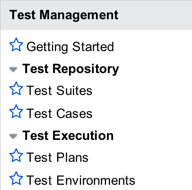

Test Management
| |
Note: This article applies to Fuji and earlier releases. For more current information, see Test Management at http://docs.servicenow.com
The ServiceNow Wiki is no longer being updated. Visit http://docs.servicenow.com for the latest product documentation. |
Contents
1 Overview
The Test Management application provides a tool for manual software testing. Test managers can use this application to manage all phases of the testing process:
- Create and maintain the test repository by creating test suites, test cases, and tests.
- Enable test execution by creating test plans, adding test cases, and assigning testers to test cases.
- Initiate the testing process and monitor the progress.
- Evaluate test results and complete the test plan sign-off form.
Testers can use this application to:
- Perform tests and record results.
- Update test case status.
- Report defects and retest, as necessary.
Administrators can activate the Test Management application starting with the Fuji release.
2 Key Terms
- Test suite: a repository of test cases. The test cases in a test suite can be copied over to a test plan.
- Test case: a collection of related tests. A test case is saved as part of a test suite and can be added to a test plan. Each test case within a test plan has an assigned tester.
- Test: a collection of conditions or steps used to determine whether a feature is working correctly. A test also includes an expected result, which is used to determine if the test case passes or fails.
- Test plan: the tasks for how a product or a feature is to be tested. A test plan includes one or more test cases and can also specify a test environment. The test manager uses the test plan to assign and execute test cases and to track the testing progress.
- Test environment: the instance where testing should be performed, specified as a URL. A test environment is an optional parameter that the test manager can associate with a test plan.
- Test execution: the process of performing tests. The test manager assigns testers to test cases in a test plan; testers perform the tests in the assigned test cases.
- Guided test execution: an automated notification process for performing tests. The test manager assigns testers to test cases in a test plan and initiates testing from the Test Plan form. Testers receive notification to begin testing using the Assessments engine.
3 Process Flow
The tasks associated with manual software testing can be divided into the following categories:
- Test setup: the test manager builds the test repository by creating test suites, test cases, and tests.
- Test execution: the test manager creates a test plan to test a specific product or feature, adds test cases, and assigns a tester to each test case. If desired, the test manager can also define a test environment.
- Test initiation: the test manager initiates the testing process and monitors the progress on the Test Plan form.
- Testing: testers perform the tests in their assigned test cases, record the test results, and update the status of each test. If necessary, the testers indicate the reason for a failed or blocked test.
- Sign-off: stakeholders review the test results and any open issues and then collaboratively decide whether the test plan sign-off form can be completed.
With the exception of completing the test plan sign-off form, there is no recommended order for performing these testing tasks. Each task can be independently performed.
4 Integration with Project Portfolio Suite
The Test Management application can also be used as part of the Project Portfolio Suite. If activated as part of PPS, the following test procedures can be handled through the Project Workbench:
- Add a test phase to a project.
- Assign a test plan to the test phase.
- View the test cases associated with the test phase in a list view or visual task board.
- Perform the tests in the test cases and record results.
- Track the progress using the Percentage complete field in the timeline.
As testers perform tests and record results, this information is updated in the test plan and in the test phase, and in turn is updated in the project.
For more information, see Using Project Workbench.
5 Roles
The test management application uses the following roles.
| Role [name] | Description |
|---|---|
| test manager [tm_test_manager] |
Manages test plans and test suites, creates tests and test cases, and assigns testers to perform testing. |
| tester [tm_tester] |
Executes tests and test cases, and records results. |
6 Menus and Modules
The Test Management application includes the following menus and modules.
|  |
|
{kind=link}
Activating the Test Management application also adds the My Tests module in the Self-Service application. When guided testing is initiated by the test manager, the assigned tester is notified and the tests to be performed appear on this page.
7 Activating Test Management
An administrator can activate the Test Management plugin to access the application.
| Click the plus to expand instructions for activating a plugin. |
|---|
|
If you have the admin role, use the following steps to activate the plugin.
|
The test management application can also be activated as part of the Project Portfolio Suite.